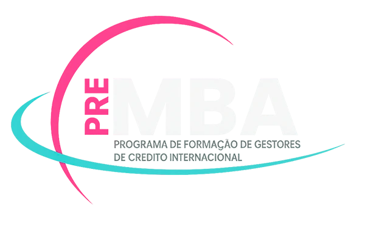
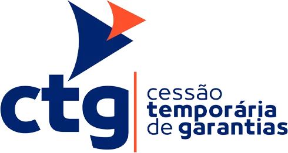

Cerca de 34% de todo o PIB mundial circula como crédito entre países.
Fonte: BISDo Brasil para o mundo
Você escolheu prosperar.
Formamos os profissionais que estruturam Crédito Internacional para financiar empresas brasileiras.
- +400 alunosformados em Crédito Internacional
- até 5xjuros menores que o crédito dos bancos
- 8 a 15 anosde prazo para pagar
- Lei 14.286/21registro no Banco Central
Lumnis na mídia
A melhor oportunidade do momento
O crédito internacional não é futuro. É presente.
O mercado internacional de crédito está aberto, e o Brasil ainda não tem profissionais preparados para operar nele. O dinheiro lá fora custa até 5x menos do que o crédito dos bancos.
Alta de cerca de 13,8% sobre o ano anterior. O capital quer vir.
Capital que custava 25% ao ano passa a custar 8% em dólar.
Crédito bancário no Brasil
prazo de 2 a 5 anos
Crédito Internacional
prazo de 8 a 15 anos
O que a Lumnis faz na prática
Do diagnóstico ao dinheiro na conta.
01
Análise e diagnóstico financeiro
Tudo começa pela empresa: balanços, fluxo de caixa e capacidade de pagamento. O profissional formado pela Lumnis entende se a operação faz sentido antes de dar o primeiro passo.
02
Montagem jurídica e documental
A operação é estruturada dentro da Lei 4.131/62 e do Marco Legal do Câmbio, com garantias, documentação e registro rastreável no Banco Central.
03
Conexão com o investidor estrangeiro
Empresas brasileiras são apresentadas a fundos e investidores de fora que buscam bons projetos para financiar, com prazo longo e custo previsível.
04
Condução até o desembolso
Negociação, diligência e acompanhamento completo da operação, até o capital estrangeiro chegar ao caixa da empresa.
05
Resultados que movimentam a economia
Com acesso a crédito estrangeiro, gestores chegam a produzir de 15 a 20 vezes mais por unidade de capital. Empresa que cresce gera emprego, renda e país mais forte.
Formações
Aprenda com quem atua em operações reais.
Simulações de estruturação, abordagem de clientes e suporte de campo, com acesso a oportunidades diretas dentro do Ecossistema Lumnis.
Agente de Crédito Internacional
Para quem atua direto com o cliente e quer aprender, na prática, a identificar e conectar oportunidades de crédito.
Fale com um especialistaGestor de Crédito Internacional
Para quem quer estruturar e conduzir operações completas, dentro e fora do país.
Fale com um especialista
Pré-MBA ACI
Programa de formação de gestores em 9 módulos:
- Marco Legal ACI (Lei 14.286/21)
- Crédito Internacional e o desenvolvimento do Brasil
- Comunicação eficaz com empresários e investidores
- Matemática financeira
- Análise de balanços
- Análise de crédito e risco
- Instrumentos de financiamento internacional
- Produtos e serviços financeiros
- IA na gestão do crédito internacional
A base legal
Previsto em lei. Registrado no Banco Central.
O Aporte de Crédito Internacional (ACI) não é brecha nem atalho. É um caminho regulado, com rastreabilidade de ponta a ponta.
- Lei 4.131/62Lei do Capital Estrangeiro: disciplina a entrada de recursos de fora no país.
- Lei 14.286/21Marco Legal do Câmbio, em vigor desde 30/12/2022: modernizou e simplificou as operações.
- Banco CentralCada operação é registrada e rastreável junto ao Banco Central do Brasil.
Quem já usa esse caminho
As gigantes que cresceram com Crédito Internacional.
A JBS multiplicou seu tamanho em 20 vezes. Grandes empresas brasileiras financiam a expansão com capital estrangeiro há décadas. Agora esse caminho está aberto a muito mais empresas.
Empresas citadas como exemplo de uso de crédito internacional. Não são parceiras nem clientes da Lumnis.
Ecossistema ACI
Muito além da sala de aula.

Libere milhões com seu imóvel
Cessão Temporária de Garantia (CTG): use um imóvel como garantia para viabilizar operações de crédito.
Conhecer a CTG → +10MSua empresa fatura mais de R$ 10 milhões por ano?
Então está pronta para o próximo nível: consultoria para estruturar a captação de capital estrangeiro.
Falar com a consultoria →Nossa missão
Educar o Brasil para o Crédito Internacional.
O Brasil é a maior economia da América Latina e um dos 10 maiores PIBs do mundo. Mesmo assim, mal participa dos trilhões que circulam em crédito entre países. Menos de 1% das empresas brasileiras gera 33% da riqueza nacional. A Lumnis existe para mudar essa conta: o dinheiro que movimenta o mundo pode financiar o crescimento do Brasil, e nós formamos quem sabe abrir esse caminho.
+400alunos já formados pela Lumnis para operar Crédito Internacional
Imprensa
O que estão falando da Lumnis.
Dúvidas frequentes
Antes de você perguntar.
O que é o Aporte de Crédito Internacional (ACI)?
É a captação de recursos de investidores e fundos estrangeiros para financiar empresas brasileiras, com juros menores e prazos mais longos do que o crédito bancário tradicional, dentro da legislação de capital estrangeiro.
Isso é legal e regulamentado?
Sim. As operações seguem a Lei 4.131/62 e a Lei 14.286/21 (Marco Legal do Câmbio) e são registradas no Banco Central do Brasil.
Qual a diferença entre a formação de Agente e a de Gestor?
O Agente (6 horas, certificação em 1 semana) atua direto com o cliente, identificando e conectando oportunidades. O Gestor (24 horas, certificação em 5 semanas) aprende a estruturar e conduzir as operações, podendo atuar dentro e fora do país.
O que é o Pré-MBA ACI?
Um programa de formação de gestores em 9 módulos, do marco legal à análise de crédito e risco, passando por matemática financeira, instrumentos de financiamento internacional e uso de IA na gestão do crédito.
Depois de formado, tenho acesso a oportunidades reais?
Os alunos contam com suporte de campo e acesso a oportunidades diretas dentro do Ecossistema Lumnis. Fale com um especialista para entender como funciona no seu caso.
Próximo passo
O dinheiro que movimenta o mundo pode financiar o crescimento do Brasil.
Fale com um especialista e descubra qual formação combina com você.
Conversar no WhatsAppou ligue (11) 94564-5253